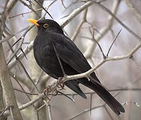

Informations sur le merle noir
Le Merle noir (Turdus merula), ou plus communément Merle, est une espèce de passereaux de la famille des turdidés.
Le merle niche en Europe, Asie et Afrique du Nord, et a été introduit en Australie et en Nouvelle-Zélande. Il existe plusieurs sous-espèces de Merle noir sur sa vaste aire de répartition dont certaines, asiatiques, sont considérées par certains auteurs comme des espèces à part entière. Selon la latitude, le Merle noir peut être sédentaire ou migrateur, partiellement ou entièrement.
Le mâle de la sous-espèce holotype, celle qui est la plus répandue en Europe, est entièrement noir, à part le bec jaune et un anneau jaune autour de l'œil, et possède un vaste répertoire de vocalisations tandis que la femelle adulte et les juvéniles ont un plumage brun. Cette espèce niche dans les bois et jardins, construisant un nid en forme de coupe aux formes bien définies, bordé de boue. Le Merle noir est omnivore et consomme une grande variété d'insectes, de vers et de fruits.
Mâle et femelle ont un comportement territorial sur le site de nidification, chacun ayant un comportement agressif distinct, mais sont plus grégaires lors de la migration ou sur les aires d'hivernage. Les couples restent dans leur territoire pendant toute l'année dans les régions où le climat est suffisamment tempéré. De nombreuses références littéraires et culturelles à cette espèce commune font cas de son chant mélodieux.
Plus d'information sur Wikipédia